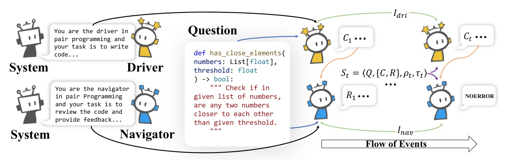
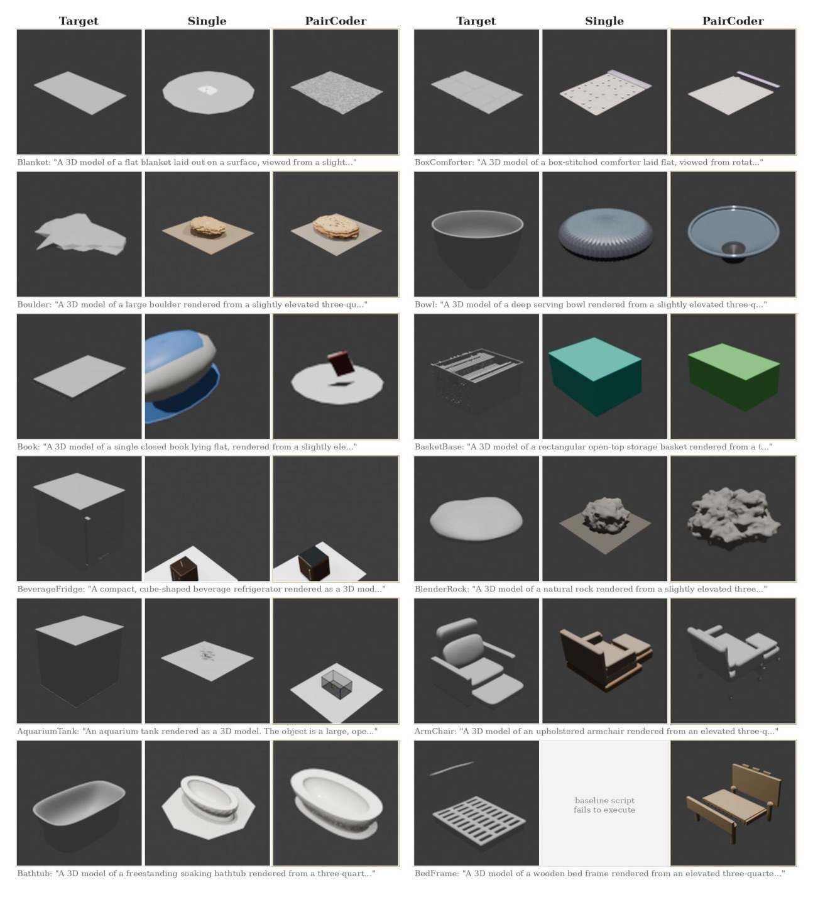

PairCoder++: verified pair programming for code-driven multimodal generation
A two-agent Driver/Navigator loop grounds review in compiler, execution, simulator, and rendering evidence — then switches roles when errors persist.
When a toolchain can speak, pair programming turns its signal into better artifacts.
Code generation is really artifact generation with an invisible judge
- LLMs create charts, scientific figures, SVGs, CAD, 3D scenes, web apps, and Verilog by writing programs.
- The success condition lives outside text: compiler, renderer, simulator, tests, or geometric/visual metric.
- Single-pass generation fails at the boundary: code may not compile/run, or the rendered artifact may miss the target structure/semantics/geometry.
- The paper’s key framing: independent review is useful only when grounded in concrete verification evidence.
More agents can be expensive; self-correction can be blind
Team-style agents
- Role-specialized pipelines improve correctness.
- But prior systems can pay up to order-of-magnitude token overhead.
- They are often domain-specific rather than a universal recipe.
Single-model self-correction
- Cheaper and simple to deploy.
- But it inherits one model perspective’s blind spots.
- Without a strong oracle, it can churn or rationalize errors.
A minimal protocol, evaluated as a broad multimodal system
- Protocol: Driver writes/revises, Navigator reviews against benchmark-native evidence, roles switch on persistent errors.
- Scope: 17 benchmarks across program synthesis, multilingual code, web, hardware, charts, SVG, CAD, 3D scenes, and P3D parametric 3D.
- Metrics: full official suites: pass/compile/execute plus SSIM, CLIP, DINO, SigLIP-2, Chamfer, geometry/topology.
- Boundary condition: gains follow oracle informativeness and baseline headroom.
Driver writes; Navigator reviews concrete evidence; errors move the keyboard

The objective is not just likely code — it is verified quality
- At each iteration, Driver produces candidate code Ct from task Q and memory Mt-1.
- Navigator receives candidate Ct, history, and verification evidence psit, then accepts or requests revision.
- No fine-tuning or auxiliary objective: frozen LLMs are steered by role prompts and shared evidence.
psi_t is the whole trick: review is grounded in what actually ran
Evidence attached to review
- Compile/execute predicate plus diagnostics
- Optional Navigator-authored tests
- For image-conditioned tasks: candidate rendering beside target
Conservative verdict
- REVISE must cite the offending line, violated requirement, and concrete fix.
- If no definite fault exists, Navigator must accept — preventing churn.
Self-Mirror keeps the same LLM behaving as Driver or Navigator

If debate does not resolve, return the best verified candidate — not the last one
- Accepted candidate returns immediately on [NOERROR].
- If budget T is exhausted, PairCoder returns arg maxC_i in M_t Quality(C_i).
- Quality orders candidates by passing verification, then continuous score, then recency.
The evaluation is broad enough to test universality, not one benchmark luck
| Family | Benchmarks | Primary evidence |
|---|---|---|
| Program synthesis | LiveCodeBench, BigCodeBench, DS-1000 | Unit tests / execution |
| Multilingual / web / hardware | HumanEval-X, WebApp1K, VerilogEval, RTLLM | Tests, Jest, simulation |
| Code-driven artifacts | DaTikZ, Plot2Code, PandasPlotBench, ChartMimic, StarVector, GenCAD, 3DCodeBench, P3D | Compile/render + visual/geometric metrics |
Models: gpt-5.4-mini / gpt-5.4 / gpt-5.5; doubao-1.5-lite / doubao-seed-2.0-mini; deepseek-v3.2 / deepseek-v4-flash; thinking disabled.
The biggest gains appear where the verifier is rich and the baseline has room
| Result slice | Single -> PairCoder | Why it matters |
|---|---|---|
| 3DCodeBench exec (gpt-5.4-mini) | 0.200 -> 0.783 | Turns many non-runnable Blender scripts into executable artifacts |
| DaTikZ compile (gpt-5.4) | 0.717 -> 0.967 | LaTeX errors are a strong oracle |
| RTLLM pass@1 (gpt-5.4) | 0.400 -> 0.620 | Simulation feedback creates actionable fixes |
| P3D validity (gpt-5.4) | 0.715 -> 0.990 | Compiler-valid solids improve coverage |
PairCoder improves not only execution, but artifact similarity
| Benchmark | Primary metric | Artifact metric |
|---|---|---|
| DaTikZ | compile .500 -> .633 | SSIM/CLIP/DINO .215/.327/.303 -> .256/.384/.338 |
| Plot2Code | exec .841 -> .962 | SSIM/CLIP .412/.802 -> .474/.912 |
| GenCAD-Code | exec .900 -> .983 | Chamfer .233 -> .166 (lower is better) |
| 3DCodeBench | exec .200 -> .783 | SigLIP-2/DINO .181/.101 -> .702/.376; Chamfer 4.85 -> 2.62 |
The repaired failures are visually concrete across six artifact domains

The method is strongest when the artifact has a trustworthy oracle and the baseline still fails.
- 3DCodeBench: up to +58 pp executability.
- DaTikZ: +10 to +30 compile points across models.
- Weak oracle examples: DS-1000 signature execution, BigCodeBench library calls, RTLLM compile-only evidence.
The loop is not free — but cost rises mainly when review finds errors

Let the agent that diagnosed the error fix it

- HumanEval-X C++: immediate switching reaches 0.427.
- Delaying to two errors drops to 0.390 — same as never switching.
- Interpretation: keeping the diagnosing agent in reviewer seat wastes its diagnosis.
More thinking helps the Driver, but does not invent a missing verifier
Where evidence is informative
- BigCodeBench high reasoning: 0.425 -> 0.475.
- Gain grows from +0.8 pp no-thinking to +5.0 pp high reasoning.
- Doctest evidence catches remaining errors.
Where evidence is weak
- DS-1000 signature-only execution: 0.310 -> 0.300 (noise).
- Extra reasoning improves the generator but gives Navigator nothing new to adjudicate.
- High effort roughly triples per-call token cost.
A clean causal story: coverage improves; valid geometry is not disturbed
- P3D-Bench asks models to write parametric construction programs compiled to meshes and scored against ground-truth geometry.
- Text-to-3D minimal-JSON split: 400 cases, with executable validity, geometry, and topology metrics.
- gpt-5.4 validity: 0.715 -> 0.990; doubao-1.5-lite: 0.140 -> 0.427 (+28.7 pp).
- On programs the baseline already compiles, geometry is unchanged; gains come from repairing non-executable programs into valid solids.
The framework is practical only if the oracle and budget justify it
- Token and latency overhead are substantial: about 7x average, 2.9x-9.2x by benchmark.
- Where verification is weak, review quality becomes model-bound and can churn correct code.
- High-reasoning variants add more cost and were only tested on a small Python subset.
- No public reviewer scores were available in the ingested artifacts; review disputes cannot be analyzed.
How to adapt PairCoder to your own agent system
- Expose the toolchain: compile logs, tests, simulator outputs, render images, or metric failures must enter the review prompt.
- Force concrete review: accept with [NOERROR] or return a line-level, requirement-level fix — no vague style churn.
- Switch ownership when errors persist so the diagnosing agent performs the repair.
- Track best verified candidate, not final candidate, as a safe fallback under budget exhaustion.
- Measure cost-benefit per task family; do not use multi-round review where oracle is weak.
Why toolchain grounding matters
the program must survive an external toolchain (a compiler, renderer, or simulator) that the model cannot observe while writing, and the artifact must then match the target in structure, semantics, and geometry.
程式必須通過模型寫作時看不見的外部工具鏈，產物還要在結構、語義、幾何上匹配目標。§1 p.2
the Navigator must cite a concrete error or accept with [NOERROR], which prevents churn on already correct programs.
Navigator 必須指出具體錯誤，否則用 [NOERROR] 接受，避免把已正確的程式反覆改壞。§1 p.2 / §3.2 p.5
Boundary conditions
The same columns also delimit the method honestly: on benchmarks where the verification signal is weak ... small regressions appear.
論文很誠實地標出方法邊界：驗證訊號弱時，少數回歸會出現。§4.3 p.9
This makes the source of the gain unambiguous: it is coverage of non-executable programs, not re-optimization of already-valid geometry.
P3D 的提升來源很清楚：把原本不可執行的程式修成有效 solid，而不是重優化已有效幾何。§4.4 p.10
Appendix galleries support the same failure-repair story

Bottom line
PairCoder is not just ‘two agents’. It is two agents with an external verifier allowed to speak in the loop.